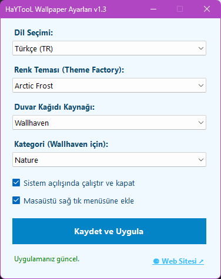

Masaüstünüzü Her Açılışta Yenileyin
Windows arka planınızı kedi, anime, manzara veya sanat fotoğraflarıyla otomatik değiştiren, sıfır kaynak tüketen akıllı duvar kağıdı motoru.

Benzersiz Özellikler
Hafif, sessiz, akıllı ve tamamen size özel tasarlandı.
Sıfır Sistem Kaynağı
Yalnızca bilgisayar açıldığında tetiklenir, duvar kağıdını ayarlar ve anında kapanır. %0 RAM, %0 CPU!
Tamamen Sessiz (WinExe)
Asla siyah konsol veya terminal pencereleri açılmaz. Arka planda görünmez ve kesintisiz çalışır.
Akıllı Çevrimdışı Önbellek
İnternetiniz kopsa bile C:\0-wallpaper önbelleğinden rastgele bir görsel seçilir; uygulama asla çökmez.
100MB Kota Koruması
Önbellek boyutu 100MB'ı aştığında otomatik olarak sadece en eski dosyalar temizlenir, diskiniz dolmaz.
Çift Dil Arayüzü
Ayarlar penceresinden tek tıkla Türkçe ve İngilizce dilleri arasında kolayca geçiş yapabilirsiniz.
Sağ Tık & Başlangıç
Masaüstü sağ tık menüsüne ekleyebilir veya sistem başlangıcında çalışması için kayıt defterine kaydedebilirsiniz.
Zengin Görsel Kaynakları
Ruh halinize ve tarzınıza uygun görsel kaynağını tek tıkla seçin.